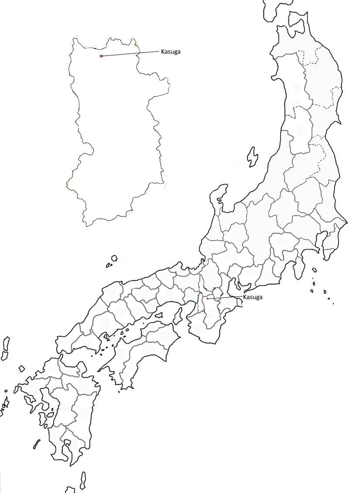

Poem #17 
かすがのはけふはなやきそわか草のつまもこもれり我もこもれり
kasugano wa
kyō wa na yaki so
wakakusa no
tsuma mo komoreri
ware mo komoreri
kyō wa na yaki so
wakakusa no
tsuma mo komoreri
ware mo komoreri
Light no fires today
on the plain of Kasuga,
for sweet as new grass
my young spouse is hidden here
and I am hidden here too.
on the plain of Kasuga,
for sweet as new grass
my young spouse is hidden here
and I am hidden here too.
Poem #19
かすがののとぶひののもりいでて見よ今いくかありてわかなつみてむ
kasugano no
tobuhi no nomori
idete mi yo
ima ikuka arite
wakana tsumitemu
tobuhi no nomori
idete mi yo
ima ikuka arite
wakana tsumitemu
Go outside and look,
guardian of Beacon-Fire Field
on Kasuga plain:
how many more days must pass
before we may pick young greens?
guardian of Beacon-Fire Field
on Kasuga plain:
how many more days must pass
before we may pick young greens?
Poem #22
かすがののわかなつみにや白妙の袖ふりはへて人のゆくらむ
kasugano no
wakana tsumi ni ya
shirotae no
sode furihaete
hito no yukuramu
wakana tsumi ni ya
shirotae no
sode furihaete
hito no yukuramu
Are they on their way
to pick young greens in the fields
at Kasugano -
those girls who call each other
with the sleeves of their white robes?
to pick young greens in the fields
at Kasugano -
those girls who call each other
with the sleeves of their white robes?
(The Mchullough translation says poem 19, but the Japanese Kokinwakashu on the Japanese Text Initiative says 18.)

Background Information
Kasugano- In Yamato; a field or plain that was something romantic or pastoral to Heian poets (Miner et al.)
In response to a painting of spring herbs in a field, one poet (Tadamine) calls it a “spring field” while the other (Sosei) calls it Kasuga Plain (Kaori).
In 1207, a retired emperor started a project with sliding door paintings: 46 utamakura were picked, with each utamakura being assigned a special feature and season. 4 painters were hired and 10 poets were assigned to do one poem on each of the placenames. The best poem would be painted onto the screen door. 8/10 poems referred to picking new herbs and 8/10 poems referred to snow (Kaori). While obvious that it referred to picking new herbs and plains, it also referred to snow. If the book of winter in the Kokinwakashu were bigger, there would likely be some references to Kasuga Plains.
In response to a painting of spring herbs in a field, one poet (Tadamine) calls it a “spring field” while the other (Sosei) calls it Kasuga Plain (Kaori).
In 1207, a retired emperor started a project with sliding door paintings: 46 utamakura were picked, with each utamakura being assigned a special feature and season. 4 painters were hired and 10 poets were assigned to do one poem on each of the placenames. The best poem would be painted onto the screen door. 8/10 poems referred to picking new herbs and 8/10 poems referred to snow (Kaori). While obvious that it referred to picking new herbs and plains, it also referred to snow. If the book of winter in the Kokinwakashu were bigger, there would likely be some references to Kasuga Plains.